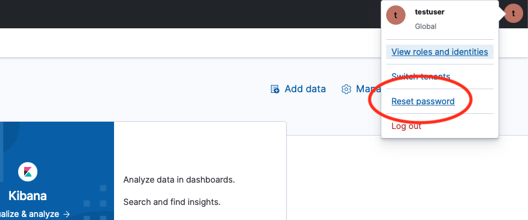

Cloud Startup¶
Overview¶
This page provides the steps necessary to get going with data ingestion and querying of the PDS Registry Service on the cloud from the perspective of a Discipline Node (DN).
Initial Set-up¶
To get things going, you should have provided the EN contact with the following:
A list of user email addresses which will be authorized to perform data ingestion.
A list of IP addresses or blocks of addresses from which data ingestion will occur.
Opensearch accounts will be set up for each user and their username and (temporary) password will be sent to them via JPL Large File Transfer (LFT) which provides secure transit of the credentials. The IP addresses are added to the Opensearch access whitelist.
Along with your Opensearch user credentials you will receive the URL which points to your Opensearch instance - we will refer to this as the Opensearch URL.
Changing Your Opensearch Password¶
Note: One limitation of AWS Opensearch is the inability to change user passwords through any means other than the Kibana console.
Kibana is a data visualization dashboard for Opensearch and provides some additional administrative functions such as changing your user password. The password provided by the EN contact is considered only temporary (since it is known to those other than yourself). It should be changed immediately upon receipt and routinely every few months through the following steps:

From one of the whitelisted IP addresses you provided to the EN contact, open a browser and open the Kibana URL which is your Opensearch URL appended with “/_plugin/kibana/”
Enter your username and current password, click “Log In”.
If prompted to “Start by adding your data”, click on “Explore on my own”.
If prompted to “Select your tenant”, select “Global” the click “Confirm”.
The Kibana Home page will open. In the upper right corner there will be a circle icon containing the first letter of your username. Click that circle.
In the pulldown menu which opens, select “Reset password”. See figure below.
In the pop-up window which opens, enter your current password, new password and confirmation of the new password. Click “Reset”. (If the Reset button does not activate, it means the password and its confirmation do not match.)
Registry Tools¶
Once the above setup is complete, the Registry Tools are used to process and ingest product metadata into the Registry. Details on how to run these tools are found in the User Tasks Section
The registry tools (i.e. Harvest - both standalone and scalable, Registry Manager) are deployed on premise, on a system that has been included in the Opensearch whitelist (see Initial Set-up) following the procedures documented here.
Configure the tools with the Opensearch URL and credential given to you in step Initial Set-up
Registry API¶
Once data has been ingested using the Registry Tools, queries can be submitted using the Registry API which is documented here. Registry queries are based on the following endpoint pattern:
https://pds.nasa.gov/api/<search-endpoint>/<version>
To submit a cross-cluster search enabled query (i.e. to the EN registry which will search across all DN registries), the <search-endpoint> is simply search. To direct a query to a specific DN registry, search is replaced with search-<DN-abbr> where <DN-abbr> is the particular DN abbreviation such as ‘GEO’, ‘ATM’, ‘SBNUMB’, etc.
<version> is the API version, which is currently 0.4. So to query for the first 10 products from the EN registry, the following API request is used:
https://pds.nasa.gov/api/search/0.4/products?limit=10
Similarly, to directly access the RMS registry:
https://pds.nasa.gov/api/search-rms/0.4/products?limit=10